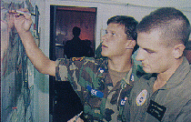
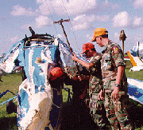
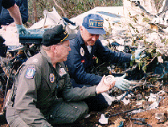

CAP Missions: Emergency Services
Growing from its World War II experience, the Civil Air Patrol has continued to strive to save lives and alleviate human suffering through a myriad of emergency service missions.
Search and Rescue (SAR): Perhaps best known for its search and rescue efforts, CAP now flies more than 85 percent of all inland SAR missions directed by the Air Force Rescue Coordination Center at Langley AFB, Va. Overseas, CAP supports the Joint Rescue Coordination Centers in Hawaii and Puerto Rico. Just how effective are the CAP missions? More than 100 people are saved every year by CAP members!
"Civil Air Patrol is always the first unit in and usually the last unit out when a real disaster occurs. They are very well trained and always respond quickly."
Toby Carroll
Corporate Safety Evaluation Director, Continental Airlines
Guardian Angel '91 Exercise
Disaster Relief: Often overlooked but vitally important is the role CAP plays in disaster relief operations. CAP provides air and ground transportation, and an extensive communications network. They fly disaster relief officials to remote locations, and support local, state and national disaster relief organizations with manpower and leadership.
In fact, CAP has formal agreements with many humanitarian relief agencies such as the American Red Cross, Federal Emergency Management Agency, Federal Aviation Administration, and Coast Guard.
Humanitarian Services: Closely related to disaster relief is CAP's support of humanitarian missions. Usually in support of the Red Cross, CAP air crews transport time-sensitive medical materials including blood and human tissue in situations where other means of transportation are not possible.
Other Missions
Air Force Support: It's hardly surprising that CAP performs several missions in direct support of the U.S. Air Force. Specifically, CAP conducts damage assessment, radiological monitoring, light transport, communications support, and low-altitude route surveys.
Joint U.S. Air Force and CAP SAR exercises sharpen the skills of all participants and offer realistic training for a deadly serious mission.
Counterdrugs: CAP joined the "war on drugs" in 1986 when CAP signed an agreement with the U.S. Air Force and U.S. Customs Service offering CAP resources to be used to stem the flow of drugs into and within the United States. Today, CAP has similar agreements with the Drug Enforcement Administration and the U.S. Forest Service.
"The war on drugs is a battle of such vast proportion that we may not yet recognize its scale... We need mandatory drug education to get our youth pointed in the right direction. Our young people need to know how to resist peer pressure, to learn self-respect and pride--just like Civil Air Patrol teaches its cadets."
Ernie Preate, Jr.
Former Pennsylvania Attorney General
CAP has made major contributions to the counterdrug fight by providing aerial reconnaissance, airborne communication support, and airlift of law enforcement personnel. In 1994 alone, CAP units flew nearly 35,000 hours in support of counterdrug efforts.
CAP/ROTC Initiative
Starting in 1993, CAP became more closely involved in direct support of the Air Force ROTC. Joint efforts are underway to conduct cross flow educational and orientation flights with Air Force ROTC, benefiting both organizations through better use of each one's training resources.
[ Back ]